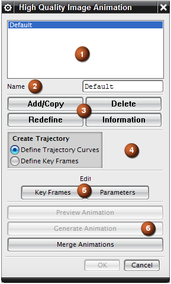

高质量图像动画对话框
高质量图像动画对话框

选项 |
描述 |
|
|---|---|---|
|
1 |
动画轨迹列表框 |
列出部件的已保存轨迹（如存在）以及未指定的默认轨迹。 可以使用默认轨迹作为模板来创建您自己的轨迹。 不能重命名或编辑默认轨迹。 |
|
2 |
名称 |
供您指定要添加到动画轨迹列表框中的新动画的名称。 |
|
3 |
添加/复制 |
添加默认轨迹的副本，或将现有轨迹复制到动画轨迹列表框。 选择动画轨迹列表框中的默认轨迹并单击添加/复制后，添加新的轨迹。 选择动画轨迹列表框中的轨迹并单击添加/复制后，创建现有轨迹（而非默认）的副本。 |
删除 |
从动画轨迹列表框中删除选定轨迹。 |
|
重新定义 |
从动画轨迹列表框中重新定义选定轨迹。 重新定义轨迹时，与原始轨迹关联的所有信息都被删除。 |
|
信息 |
打开信息窗口以显示在动画轨迹列表框中选择的动画轨迹的相关信息。 |
|
|
4 |
创建轨迹 列出用于创建轨迹以使摄像机位置沿其移动以捕捉动画的的选项。 |
|
定义轨迹线 |
通过沿模型中现有曲线排列的关键帧来创建轨迹。 可以将工作部件中的任何连续曲线用作曲线轨迹轮廓（包括实体边界）。 NX 对曲线轨迹上指定的关键帧点之间的位置进行插补，并为动画生成中间帧。 |
|
定义关键帧 |
基于围绕模型的摄像机位置序列创建轨迹。称为关键帧的高质量图像从这些摄像机位置进行渲染。 NX 对关键帧之间的位置进行插补以为动画生成帧。 |
|
|
5 |
关键帧 |
打开以下对话框之一：
|
参数 |
打开编辑参数对话框可指定动画的参数。 |
|
|
6 |
预览动画 |
打开预览动画对话框可预览动画。 |
生成动画 |
打开生成动画对话框可通过对动画中的每一帧进行高质量图像渲染来生成动画。 可以使用生成动画对话框中的选项，通过对大量工作站的处理进行分布并为各个工作站指定一定范围的帧数，从而分解对大型动画的处理。在处理结束后，可以将 MPEG 文件连接在一起，以通过动画定序器对话框创建扩展的电影序列。 |
|
合并动画 |
打开动画定序器对话框可执行以下操作：
|
|